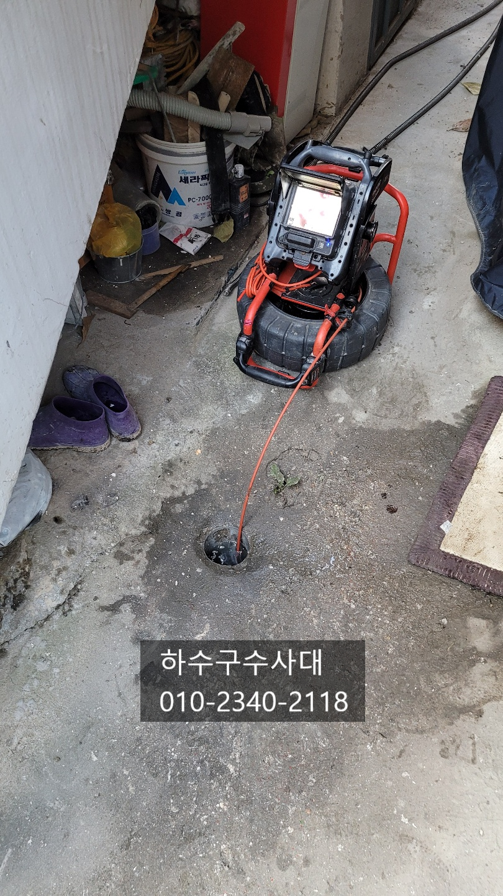
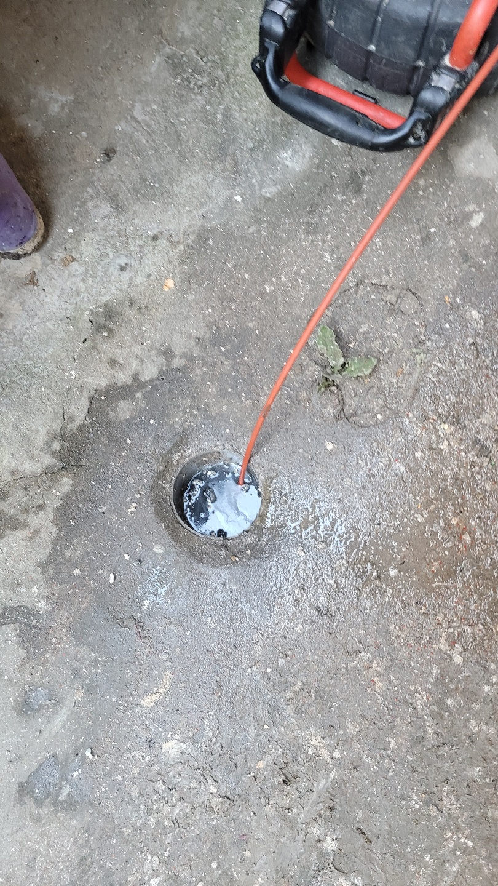
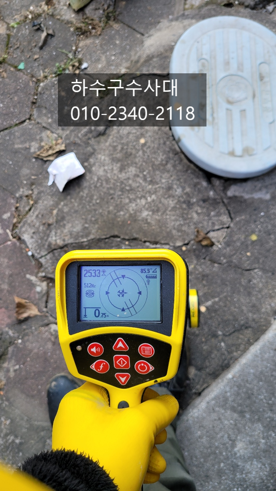
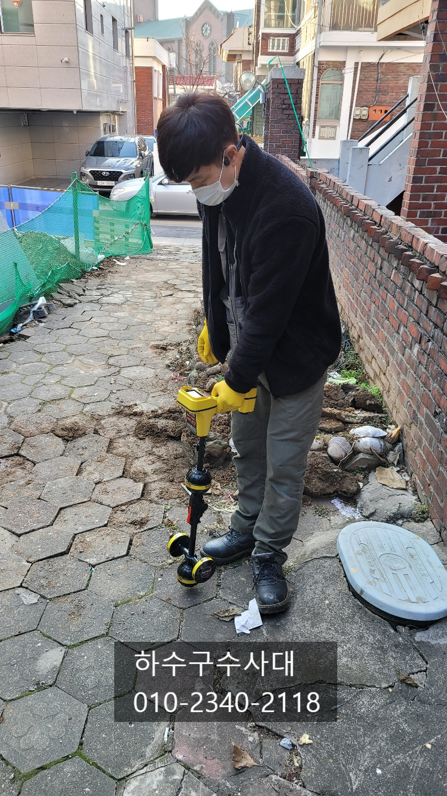
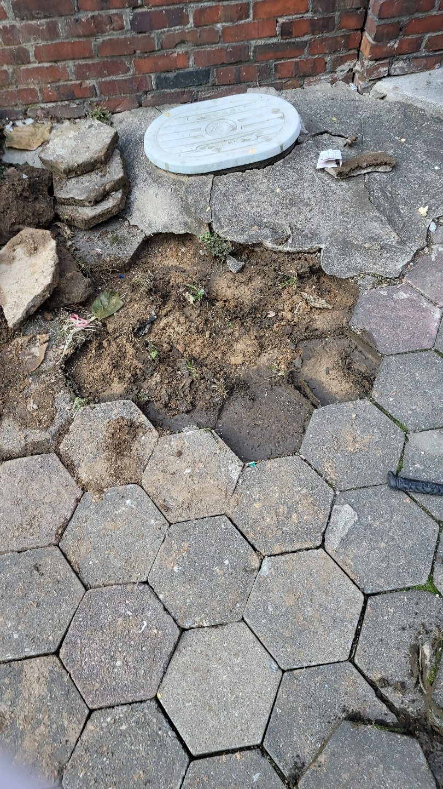
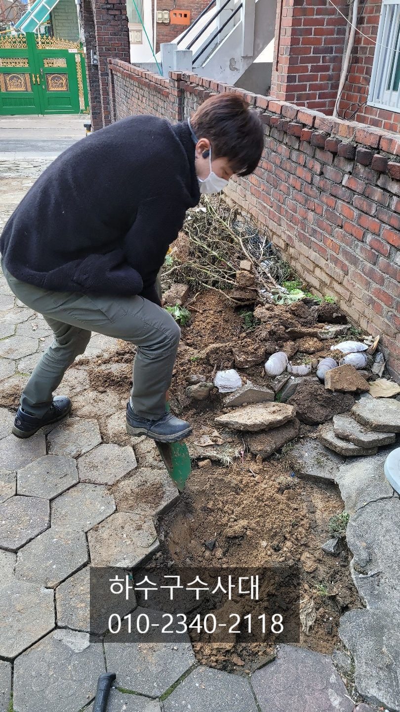
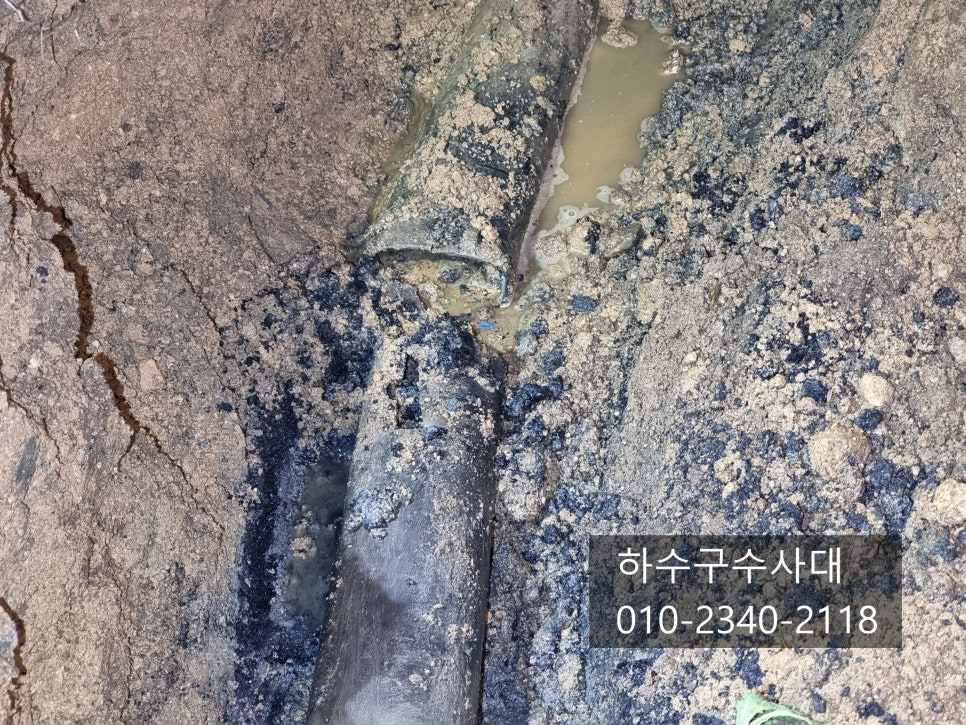

🏠 장안구하수구막힘 하수구배관공사
용인 하수구막힘 전문 시공 후기

📋 작업 개요
- 위치: 용인
- 서비스 유형: 하수구막힘, 배관막힘, 역류해결, 뚫는업체, 설비공사, 배관보수
- 작업 일시: 2021. 12. 7. 0:22
- 업체명: 하수구수사대 (010-5615-2118)
🔍 문제 상황
장안구하수구막힘 하수구배관공사
안녕하세요
"하수구수사대"입니다.
오늘은 하수구막힘으로 갔다가
하수구배관공사까지 하고 왔는데요
급하게 진행하느라 고생한 하루였습니다^^;;
방문한 건물으 다세대주택으로 물을 사용하면
마당하수구에서 역류하는 상황이였고
스프링으로 여러번 뚫었지만 얼마전부터는
스프링으로 뚫리지도 않고 일부구간에서 스프링이
들어가지 않아 원인을 정확하게 확인하고자
"하수구수사대"에 연락을 주셨답니다.
우선 방문하여 스프링장비를 넣어지만
역시 장비가 진입이 되지 않았습니다.
이물질때문에 막혀있다면 보통은 스프링장비고
뚫고나가지만 배관에 문제가 있다는 상황을 배제할수는
없어서 일단 물을 빼고 내시경촬영을 해본결과
배관이 무너져 흙이 가득차있는 상태였습니다.

🔎 원인 분석
💡 전문가 진단: 하수구수사대010-2340-2118
배관이 무너졌을때는 어느 업체가 와도
뚫을수 없기에 배관공사를 하기로 했는데요
우선 배관이 무너진 위치를 정확하게 찾기위해
관로탐지를 하였습니다.
관로탐지를 하지않고 대충 눈짐작으로 파게되면
엉뚱한곳을 팔수도 있기에 배관공사시
필수로 진행되는 작업입니다.
정확한 배관위치를 탐지하고 파기 시작했는데요
솔직히 일요일 오후시간이라 늦은감이
있었지만 다음날 일정도 있고 고객님께서도
빠른해결을 원하셔서 급하게 공사가 진행되었습니다.
배관이 무너진 위치를 확인해보니
거기뿐만아니라 배관이 긴구간이 무너져
전체적으로 문제가 있는것으로 확인이 되었습니다.
아무래도 주택이 오래되기도 했고 배관을보니
예전에 한번 보수를 했었는지 비닐로 감싸져 있었어요 .ㅜㅜ
배관이 무너진 구간을 전체적으로 점검하고
땅을 파보니 굉장히 긴구간이 문제가 있다는것을
확인할수가 있었습니다.

🔧 작업 과정
하수구설비하는 사람들끼리 하는말이 있는데
그말이 생각이 났어요 ^^;
"땅속일은 아무도 몰라~~"
진짜 그말이 생각나더라구요 ㅡㅜ
무너진 구간이 짧을거라 생각했었는데. . .
하지만 이미 작업은 시작했으니
끝을 봐야겠죠? ㅎㅎ 무너진 배관을 제거하고
튼튼한 새 배관으로 바꿔주는 작업을 진행합니다.
하수구수사대
010-2340-2118
솔직히 배관공사를 하는데 어디서
물을 쓰는지 계속 물이 흘러나와
작업하는데 시간이 더 지체되기도 했답니다ㅜㅜ
저녁이라 씻기도 해야하고 식사준비도
해야하는데 물을 쓰지말라고
할수도 없는 노릇이라 . . .
다행히 생각했던 시간에 배관연결이 끝났는데요
뜻하지 않은 공사에 열정의 삽질을 하느라
심한투통이 왔습니다 ㅋㅋㅋ
고객님께서도 한시도 현장을 떠나지 못하시고
지켜보시느라 힘드셨을텐데
작업이 너무늦지않게 끝나서 다행이라고
하셨어요.^^
다시 흙을 덥고 보도블럭을 제자리에
넣고 공사가 마무리 되었는데요
대체적으로 하수구가막히면 95%는 뚫게 되는데요
부득이하게 5%정도는 배관이 무너지고나
배관에 빼지못할 이물질이 들어간경우
공사로 진행되고 있습니다.


✅ 작업 완료
공사를 진행함이 있어서 중요한 부분은
막힘의 원인을 정확히 파악하고 공사를 하느냐가
중요하다고 볼수있는데요 뚫을수 있는데
굳이 공사를 할 필요는 없으니까요^^
"하수구수사대"는 #하수구막힘 의 정확한
원인파악과 해결을 해드리고 있으니
하수구막힘으로 고민중이시라면
언제든지 연락주세요^^




⚠️ 하수구 배관 막힘 예방 및 관리 가이드
- ✅ 머리카락, 비닐, 물티슈 등 물에 분해되지 않는 이물질은 하수구 유입을 절대 금지해 주세요.
- ✅ 하수구 거름망을 씌우고 모여진 이물질은 주기적으로 쓰레기통에 바로 비워주셔야 합니다.
- ✅ 배관 노후가 심할 경우 이물질이 더 쉽게 걸리므로 주기적인 배관 세척(고압세척 등)을 권장합니다.
- ✅ 작업 후 1년 이내 재발 시 하수구수사대에서 무상 A/S 보증 서비스를 제공합니다.
💡 핵심 정리
- 확실한 장비 작업(내시경 점검 및 샤프트 스케일링)으로 원인을 뿌리 뽑습니다.
- 작업 후 1년 이내에 동일한 부위 재발 시 100% 무상 A/S 서비스를 보장합니다.
- 서울 · 경기 · 인천 전 지역에 24시간 언제든 긴급 출동할 수 있도록 항시 대기 중입니다.
❓ 자주 묻는 질문 (FAQ)
🚨 용인 하수구막힘 문제로 고민이신가요?
정확한 원인 진단과 확실한 시공으로 재발 없는 해결을 약속드립니다.
24시간 긴급 출동 | 서울 · 경기 · 인천 전지역 | 1년 내 재발 시 무상 A/S